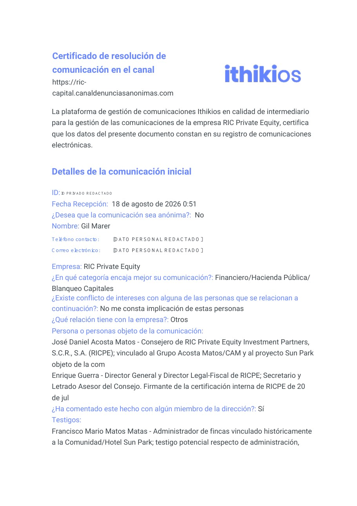
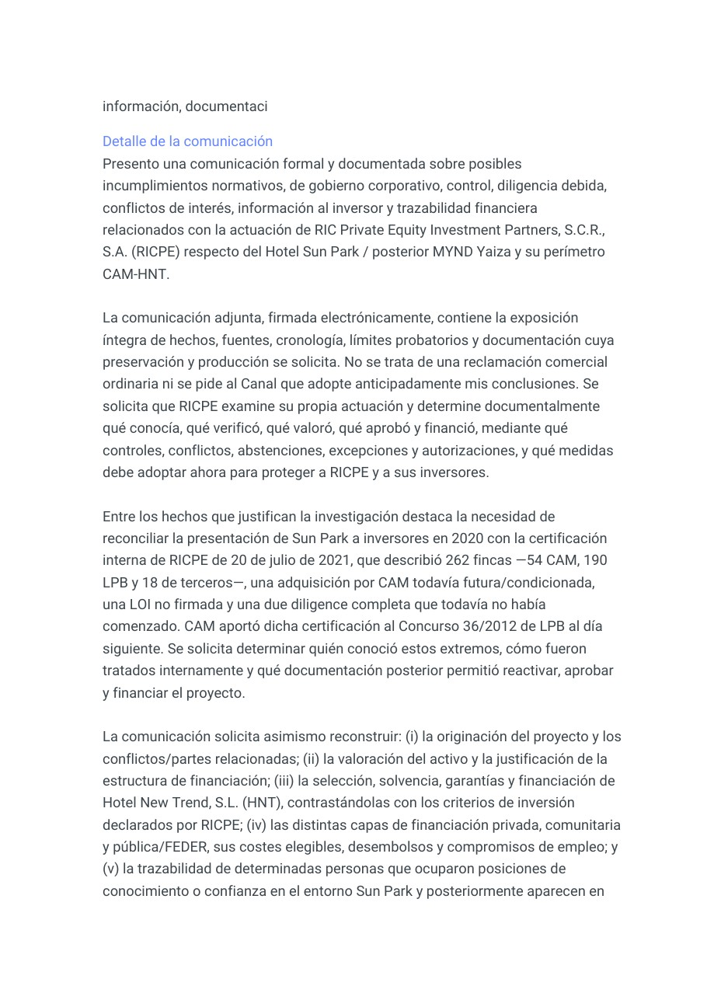
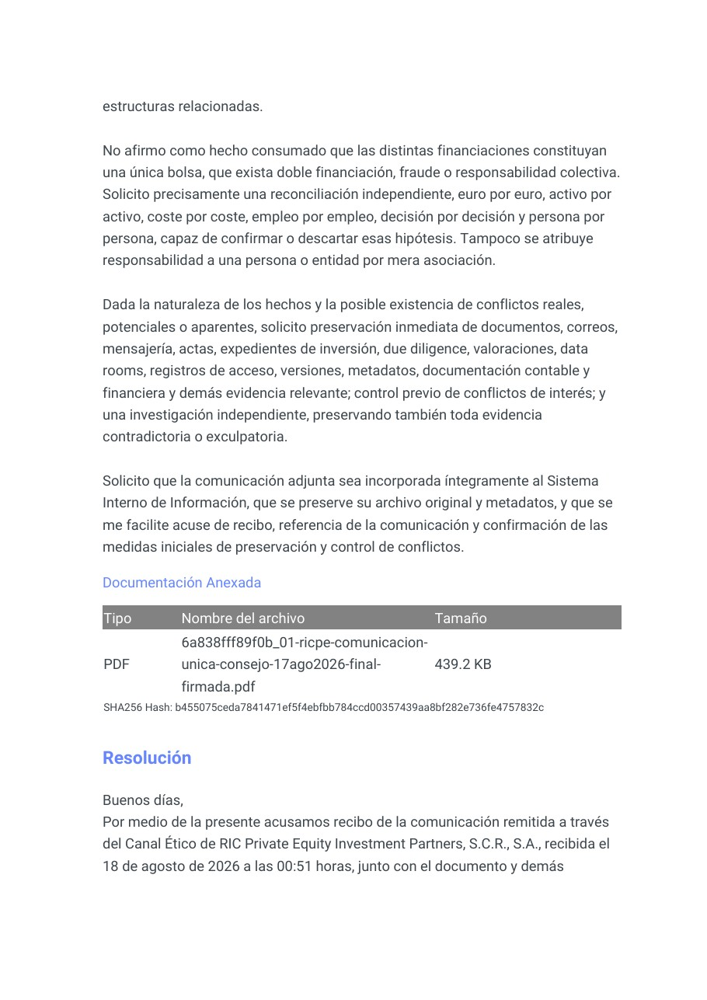
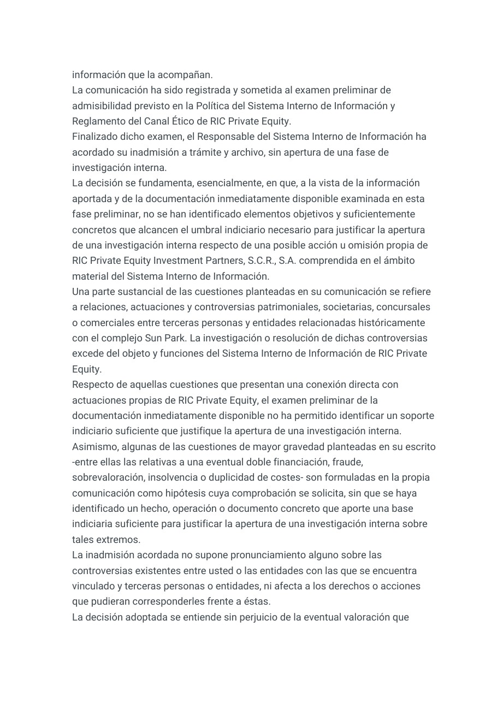
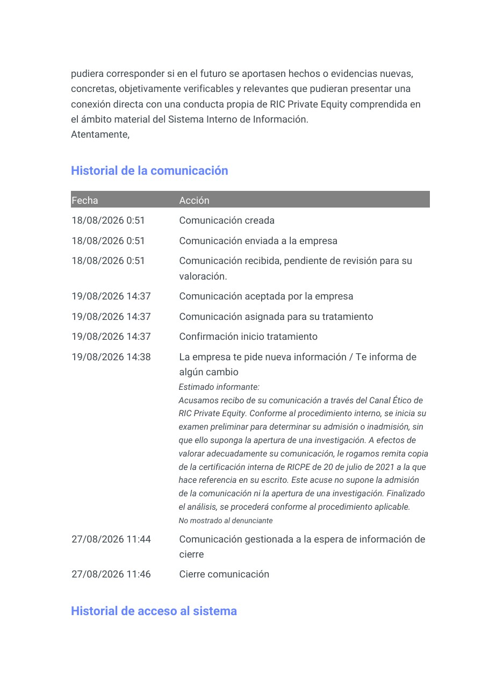
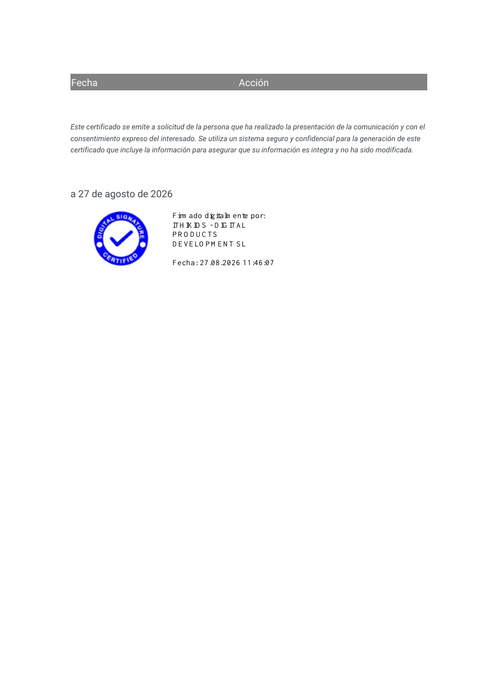
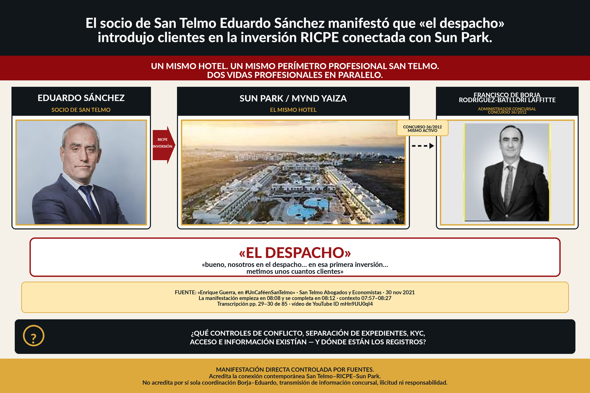
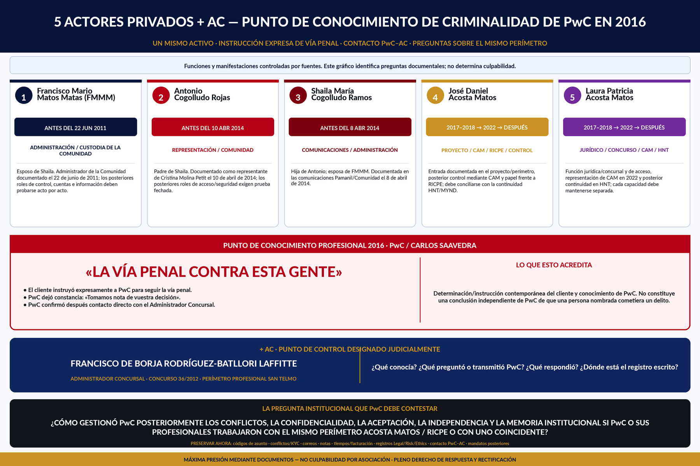

Comunicación formal firmada de 22 páginas presentada mediante el Canal Ético, con referencia privada de seguimiento.
27 AGOSTO 2026 · ITHIKIOS · CANAL ÉTICO RICPE
Resolución íntegra, cierre certificado y preguntas que siguen abiertas.
Este registro separa tres cosas: la resolución completa comunicada al informante; el historial visible certificado por Ithikios; y el expediente interno de decisión, cuya integridad, documentos examinados, control de conflictos, circulación al Consejo y medidas de preservación no quedan acreditados por el certificado público.
El historial registra aceptación, asignación y petición de la certificación propia de RICPE de 20 julio 2021; el evento figura “No mostrado al denunciante”.
El Responsable del Sistema acordó inadmisión y archivo sin abrir investigación interna.
COPIA PÚBLICA CONTROLADA · 6 PÁGINAS
Respuesta recibida de RIC Private Equity a través de Ithikios
Se reproduce visualmente, página por página, una copia pública minimizada del certificado descargado del Canal Ético. El identificador privado y los datos personales de contacto de la primera página han sido eliminados del PDF y de la imagen derivada; el nombre se conserva para atribuir la comunicación. El original íntegro se conserva bajo custodia privada.
↓ Descargar certificado público redactadoCertificado de resolución · 27 agosto 2026 · 6 páginas · identificador privado y datos personales de contacto redactados. No contiene la clave secreta de seguimiento.
{kind=link}

{kind=link}

{kind=link}

{kind=link}

{kind=link}

{kind=link}

RESUMEN DE LA RESPUESTA
Qué dice RICPE y qué no resuelve el certificado
El Responsable del Sistema Interno de Información acuerda inadmitir y archivar la comunicación sin abrir una investigación interna.
RICPE dice que la información aportada y la “documentación inmediatamente disponible” no alcanzan, a su juicio, un umbral indiciario suficiente respecto de una acción u omisión propia de RICPE.
La respuesta sitúa una parte sustancial del asunto en controversias históricas patrimoniales, societarias, concursales o comerciales entre terceros, que considera fuera del objeto de su Sistema Interno de Información.
La resolución recuerda que doble financiación, fraude, sobrevaloración, insolvencia o duplicidad de costes fueron formulados como hipótesis a comprobar, y sostiene que no identificó base concreta suficiente para investigar esos extremos.
Deja abierta una eventual valoración futura si se aportan hechos o evidencias nuevas, concretas, objetivamente verificables y directamente conectadas con conducta propia de RICPE.
El historial certifica que RICPE pidió su propia certificación interna de 20 julio 2021 y que el evento aparece marcado “No mostrado al denunciante”. El certificado no explica quién configuró ese estado, si el documento fue examinado, ni qué se entendió por “documentación inmediatamente disponible”.
Límite probatorio: el certificado demuestra lo que el Canal comunicó y el flujo que Ithikios certifica. No demuestra por sí solo quién dentro de RICPE, su Consejo, accionariado o inversores conocía cada hecho, ni cuándo lo conoció.
PREGUNTAS DEL ALERTADOR · NO CONCLUSIONES PREJUZGADAS
¿Quién sabía qué, cuándo lo supo y qué se comunicó a inversores y supervisor?
Estas preguntas se dirigen a RIC Private Equity, al órgano responsable del Canal Ético, a su Consejo de Administración, al perímetro accionarial y fundacional que corresponda, a los inversores y potenciales inversores de los vehículos gestionados y a la CNMV dentro de sus respectivas competencias. La pregunta central no presupone la respuesta: busca determinar conocimiento, diligencia, circulación interna, corrección de información y supervisión.
RICPEResponsable del SistemaConsejoAccionistas / fundadoresInversoresPotenciales inversoresCNMV
¿Cuándo conocieron realmente la situación dominical y concursal de Sun Park?
¿Los miembros del Consejo y quienes fueran accionistas fundadores conocían, durante la originación y captación, que la titularidad de Sun Park estaba fragmentada y que CAM no tenía asegurado todo el activo? Si no lo conocían, ¿qué controles de diligencia, gobierno y conflicto fallaron para que Sun Park apareciera en la propuesta de inversión? Si sí lo conocían, ¿cómo se documentó y comunicó ese riesgo?
¿En qué materiales de captación apareció Sun Park y cuándo fue corregido o cualificado?
No sólo el folleto: ¿apareció Sun Park en el conjunto de materiales de fundraising, presentaciones, webinars, memorandos, data rooms, conversaciones con inversores o documentación de vehículos? ¿Qué afirmaciones sobre titularidad, disponibilidad, due diligence, inversión y calendario se hicieron, y cuándo se actualizaron tras conocerse contingencias?
¿El Consejo, los accionistas y los órganos no conflictuados recibieron la alerta reciente?
¿La comunicación del alertador fue elevada efectivamente al Consejo o a consejeros no conflictuados? ¿Quién decidió su circulación? ¿Quién decidió la inadmisión? ¿Se informó a los accionistas relevantes? ¿O permanece el asunto circunscrito a quienes recibieron y tramitaron el Canal Ético? El certificado no responde a estas preguntas.
¿Qué ocurrió con la certificación interna que el propio canal pidió?
¿RICPE ya tenía la certificación de 20 julio 2021 cuando realizó el examen preliminar? ¿La examinó? ¿Por qué se pidió al informante y el evento aparece como “No mostrado al denunciante”? ¿Fue un ajuste técnico, un error, una decisión de usuario u otra causa? ¿Qué otras piezas integraron la “documentación inmediatamente disponible”?
¿Se informó a quienes recibieron la propuesta inicial de los hechos posteriores y de las correcciones materiales?
¿Los inversores o potenciales inversores que recibieron el folleto o cualquier material de captación fueron informados de la fragmentación de 262 fincas, de la adquisición condicionada, de la LOI no firmada y de que la due diligence completa todavía no había comenzado según la certificación de 2021? Si hubo corrección, ¿cuándo, cómo y a quién se notificó?
¿Qué conocía el supervisor, cuándo lo conoció y qué documentación supervisora conserva?
¿Qué versiones de los materiales de captación, expedientes de inversión, certificaciones, conflictos y correcciones recibió o pudo requerir la CNMV? ¿Conocía la divergencia entre las representaciones de 2020 y la certificación interna de 2021? ¿Qué controles corresponden respecto de los vehículos gestionados y de la información proporcionada a sus inversores?
Pregunta de cierre: si el Consejo, los accionistas fundadores y los inversores no conocían estos extremos, debe explicarse por qué y qué controles lo impidieron. Si los conocían, debe explicarse cuándo, mediante qué documentos, qué decisiones adoptaron y qué información correctiva se proporcionó. Si todavía no han sido informados de la alerta de agosto de 2026, debe identificarse quién ha decidido su circulación y con qué fundamento. Estas son preguntas abiertas: la evidencia pública aquí reunida no permite atribuir automáticamente conocimiento, temeridad, dolo o responsabilidad a una persona por su mera condición de consejero, accionista o inversor.
VISUALES APORTADOS · ORIGINALES PNG
San Telmo, el administrador concursal y el punto de conocimiento PwC
Se mantienen los dos archivos PNG originales utilizados en las comunicaciones institucionales. Pulse cada visual para abrirlo a tamaño completo. Sus textos plantean atribuciones, relaciones y preguntas documentales; su publicación no convierte esas proposiciones en hechos definitivamente establecidos ni determina responsabilidad.
{kind=link}

{kind=link}

Límite de lectura: ambos archivos son visuales compuestos y argumentativos aportados por el informante. Deben contrastarse con los documentos primarios, las respuestas de las personas y entidades identificadas y la evidencia potencialmente exculpatoria.
Fuentes públicas y límites
Se publica una copia probatoria minimizada con el identificador privado y los datos personales de contacto redactados. La transcripción controlada permite búsqueda textual y el manifiesto registra las huellas, la derivación y los límites de publicación. El original íntegro controla la custodia privada; ni el original ni la copia pública acreditan por sí solos el expediente interno completo de RICPE.